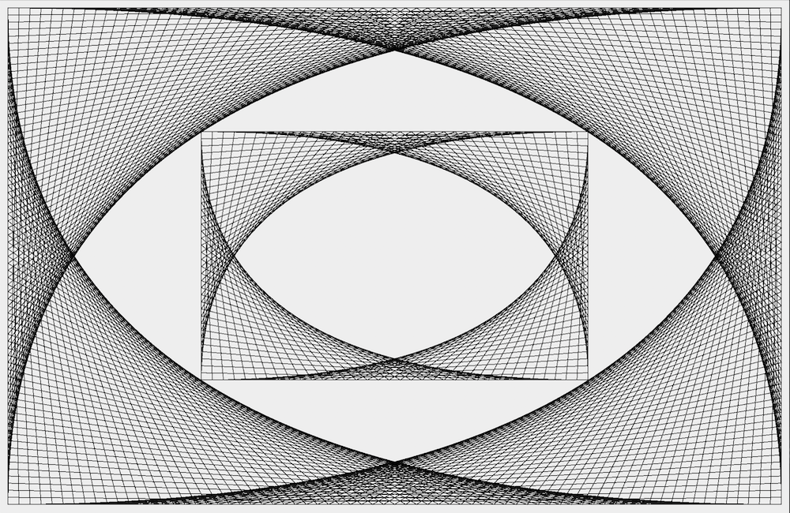

Computer Science is a class taught by Angela Taricco. It is a project based class, so the vast majority of time we spend in this class is to work on these assigned projects. The first assignment we worked on in this class was a personal website, which you are on right now! A lot of time is also spent on learning how to use Java. Though I do have some prior experience with Java, I have been able to learn plenty of new concepts than I hadn't been able to study prior to my time at Mass Academy.
The aim of this assignment was to allow us to understand the functions and uses of ArrayLists in Java. A unique aspect of ArrayLists is that they are dynamic arrays, meaning that the size of the array changes based on the number of objects in the ArrayList. This is in contrast to static arrays, which have a set size that cannot be changed after it is initiated. Though I did have a rough idea of the use of ArrayLists before this class, this is the first time I was truly able to practice using them and see applications of their use.
The aim of this project was to create a picture similar to the one shown below this text using the Graphics class in Java. Though there seems to be curves that compose this image, the whole thing is just composed of straight lines. For my attempt at this, I primarily utilized for loops in order to control the start and end points for each line, which follows a consistent pattern for each "curve". The corners of the smaller curves touching the larger curves use the same algorithm, just over a span of less pixels. The code for this project is shown below the picture of the output.
People who have type 1 diabetes don't have an simple and effective way of tracking the amount of carbohydrates they've consumed in a meal. This information is important for their daily lives because the amount of carbohydrates they've eaten dictates how much insulin they have to administer to themselves. This is especially a concern when they are eating out at a restaurant, since nutrition information isn't as readily accessible.
This app is intended to be used by those have Type 1 Diabetes. Since type 1 diabetics are often diagnosed at a young age, we wanted our app to be easy to use and accessible for people of all ages.
With Marlon Jost and Lily Pattison, we created CarbSmart, an app that makes tracking carbohydrates for a meal easier than ever. First, the user is prompted to enter the max grams of carbs they want to consume for their current meal. From there, the app mainly functions utilizing search queries to a cloud storage service called Firebase. The user first searches what restaurant the user wants to search orders for. After that, the user is free to add orders from that restaurant into a meal. As orders are added, the app is able to automatically calculate how many carbs are in their desired meal and compare that value to their desired max carbs.